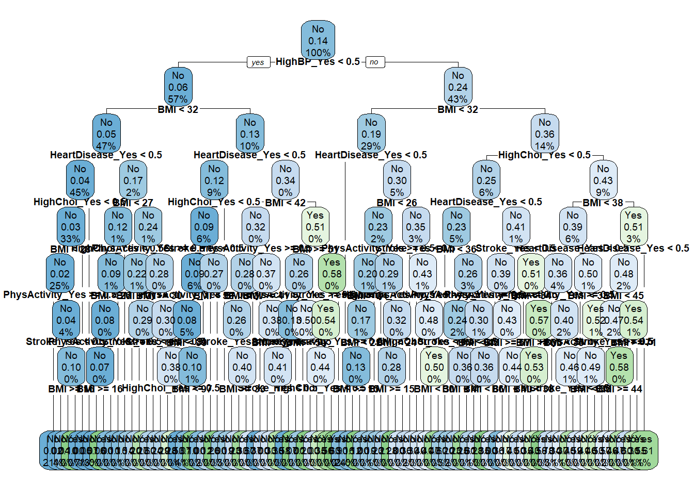
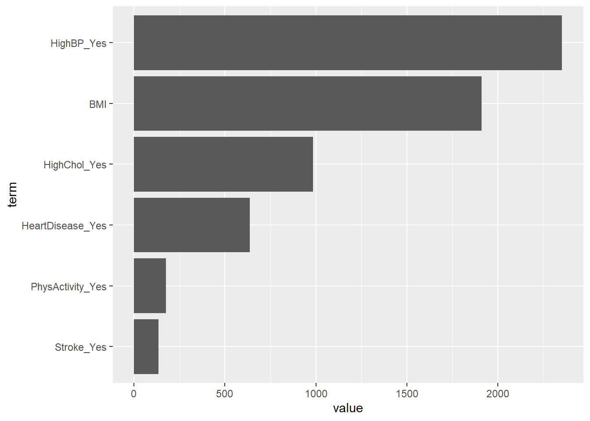

The Purpose of this modeling analysis is to use our six choosen predictor variables to find the best model fit that predicates diabetes status. Our metric used to evaluate the models will be log-loss, and the two model types will be a classification tree and a random forest. Both models will be trained using a 70/30 split with a 5 fold cross-validation.
Reading in Data
# Setting up librarys library(tidyverse)
── Attaching core tidyverse packages ──────────────────────── tidyverse 2.0.0 ──
✔ dplyr 1.1.4 ✔ readr 2.1.5
✔ forcats 1.0.0 ✔ stringr 1.5.1
✔ ggplot2 3.5.1 ✔ tibble 3.2.1
✔ lubridate 1.9.3 ✔ tidyr 1.3.1
✔ purrr 1.0.2
── Conflicts ────────────────────────────────────────── tidyverse_conflicts() ──
✖ dplyr::filter() masks stats::filter()
✖ dplyr::lag() masks stats::lag()
ℹ Use the conflicted package (<http://conflicted.r-lib.org/>) to force all conflicts to become errors
library(ranger)library(parsnip)library(readr) # rendering was having issues with read_csv when linked thought this may help
# Reading in CSV file of DHI datadhi_data <-read_csv("diabetes_binary_health_indicators_BRFSS2015.csv")
Rows: 253680 Columns: 22
── Column specification ────────────────────────────────────────────────────────
Delimiter: ","
dbl (22): Diabetes_binary, HighBP, HighChol, CholCheck, BMI, Smoker, Stroke,...
ℹ Use `spec()` to retrieve the full column specification for this data.
ℹ Specify the column types or set `show_col_types = FALSE` to quiet this message.
The first model we will be creating is a classification tree, which is a logistic regression model commonly used when you have a binary response variable, such as Diabetes status in our case. It is a tree based model meaning that is based upon the a decision tree, which is a representation how different predictor variables can be used to create a prediction of a target value. A classification tree “normally” works by using the most commonly occurring class of observations as the predictions for its regions, and these regions are created by splitting up the predictor space. Properly choosing the number of splits is important to control for overfitting (too many splits) and underfitting (too few splits), unfortunately their is no optimal algorithm to choose splits and the quantity must factor in the benefit/cost of increased processing time. Generally you will start with more splits then prune them down in order make sure that the model is not overfitted (aka does not predict well when using unseen data), and in our case we will be using cross-validation to achieve this. Specifically, by splitting our data up into different folds we can test how pruning impacts predictions when tested on various portions of the data.
Now that we have that explanation of what a classification tree is, we need to begin the process of building the relevant recipes, specs, and workflow. Before that we should create our CV split, and then subset our data by 20% in order to save on processing time. Also of note as we are using a highly imbalanced target variable it will be a good idea to stratify our sample and CV splits.
# Data split and 5 fold CV (Will be using this later to get the best possible model)dhi_split <-initial_split(dhi_data, prop =0.7, strata = Diabetes)dhi_train <-training(dhi_split)dhi_test <-testing(dhi_split)dhi_cv <-vfold_cv(dhi_train, 5, strata = Diabetes)
Now will be to create our recipes that will be used by our model.
After that we need to create the proper spec for the classification tree model by using set_engine and set_mode. Then we will combine the recipe and spec (model) to create our workflow.
# creating classification tree model specclass_spec <-decision_tree(cost_complexity =tune(),tree_depth =tune(),min_n =tune()) |>set_mode("classification") |>set_engine("rpart")# Creating workflow for non-subsetted dataclass_wkflw <-workflow() |>add_recipe(class_recipe) |>add_model(class_spec)
Now that we have created our handy workflow from tidymodels we need to fit our model to the training data using cross-validation. Before we can fit it we need to specify our grid using tune_grid, to make sure our models use our prefered metric log loss (as wells as tune the model), as well as to use grid_regular to specify the cv fold.
# Setting grid to be used in fitsclass_grid <-grid_regular(cost_complexity(),tree_depth(),min_n(),levels =5)
# fitting the model for non-subsetted dataclass_fit <- class_wkflw |>tune_grid(resamples = dhi_cv,grid = class_grid,metrics =metric_set(mn_log_loss))# Collecting metrics to find best fitclass_fit |>collect_metrics() |>filter(.metric =="mn_log_loss") |>arrange(mean)
Now that we have found out best fit we should visualize it using rpart.plot.
# loading in rpart.plotlibrary(rpart.plot)# Creating plot of classification tree best_class_final |>extract_fit_engine() |>rpart.plot(roundint =FALSE, cex = .6)
Warning: labs do not fit even at cex 0.15, there may be some overplotting

Based off this plot we can tell that HighBP is the most important predictor as it is the variable used to start the decision process, with BMI being the next most important node.
Random Forest
The next model we will be creating is a Random Forest model which is similar to the classification tree, in that the model builds a number of splits of the predictors to find the best model, but instead of using the most common class of observation it instead uses a random sample of the predictors. This random sample is represented by mtry, and a fresh sample of the predictors is taken every time the tree makes a split. Another big difference is that similar to a bagged tree the model also uses bootstrapping to aggregate results from various tree to make a final prediction, but as it does not use all predictor variables every time it has the potential to reduce the risk of overfitting the model (bagged trees are more correlated, due to being influenced by strong predictors). The random forest model is less prone to over fitting than the classification tree model, and can potentially achieve greater accuracy due to this than a classification tree.
# creating model rf_spec <-rand_forest(mtry =tune()) |>set_engine("ranger", importance ="impurity") |>set_mode("classification")# Creating non-subsetted workflowrf_wkflw <-workflow() |>add_recipe(class_recipe) |># same recipe from classification tree will work hereadd_model(rf_spec)
# fitting non-subsetted data with tune_grid and grid_regularrf_fit <- rf_wkflw |>tune_grid(resamples = dhi_cv,grid =10,metrics =metric_set(mn_log_loss))
i Creating pre-processing data to finalize unknown parameter: mtry
# Grabbing metrics for log lossrf_fit |>collect_metrics() |>filter(.metric =="mn_log_loss") |>arrange(mean)
# Grabbing best onebest_rf_param <- rf_fit |>select_best(metric ="mn_log_loss")# Using finalize_workflow to create final modelrf_final <- rf_wkflw |>finalize_workflow(best_rf_param) |>last_fit(dhi_split, metrics =metric_set(mn_log_loss))
Now that we have created out final fit we should go ahead and plot the data, and to do so we will create a variable importance plot (VIP). This will allow us to visualize the most important variables for our model.
# Extracting fit using extract_fit_enginerf_final_model <-extract_fit_engine(rf_final)# Creating VIP plottibble(term =names(rf_final_model$variable.importance),value = rf_final_model$variable.importance) |>arrange(value) |>mutate(term =factor(term, levels = term)) |>ggplot(aes(x = term, y = value)) +geom_bar(stat ="identity") +coord_flip()

As we can see based off this model once again a yes status to HighBP and BMI are the most important predictors for diabetes status, with a yes status to HeartDisease and HighChol also being important for the model. PhysActivity yes status and stroke yes status do not appear to have a high level of importance in this model.
Selecting and fitting the Best Model
Now that we have created and selected the best models we should compare the metrics in order to choose the best one that will be used on the whole data set.
# Metrics for Classification Tree Modelbest_class_final |>collect_metrics()
Based off these results the Random Forest Model is the best model as it has the lower log loss out of the two models. This was expected as generally speaking random forest models can be expected to have a higher accuracy than a classification tree. The final step now is to take the model and fit it to the whole data set.
# fitting the best model best_overall_model <- rf_wkflw |>finalize_workflow(best_rf_param) |>fit(dhi_data)best_overall_model
══ Workflow [trained] ══════════════════════════════════════════════════════════
Preprocessor: Recipe
Model: rand_forest()
── Preprocessor ────────────────────────────────────────────────────────────────
1 Recipe Step
• step_dummy()
── Model ───────────────────────────────────────────────────────────────────────
Ranger result
Call:
ranger::ranger(x = maybe_data_frame(x), y = y, mtry = min_cols(~3L, x), importance = ~"impurity", num.threads = 1, verbose = FALSE, seed = sample.int(10^5, 1), probability = TRUE)
Type: Probability estimation
Number of trees: 500
Sample size: 253680
Number of independent variables: 6
Mtry: 3
Target node size: 10
Variable importance mode: impurity
Splitrule: gini
OOB prediction error (Brier s.): 0.1028644
Now we have the knowledge of which model is the best we can use this to create our API, as we will be replicating this process and creating an interactive medium to create predictions of diabetes status.